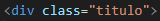

Aprendizado HTML
- !DOCTYPE html, é o comando utilizado para demonstrar para o sistema que versao da linguagem é utilizada no site.
- O comando "html" é onde toda a pagina deve ficar dentro, o "pai" das outras linhas.
- Head e Body, são linhas irmãs. Head é a configuração do site. Body é o corpo do site, a estrutura, a parte visivel.
- Indentação é uma forma de organizar a linha, fica mais facil de indentificar a abertura e o fechamento do comando. Pode ser utilizado a tecla TAB para isto.
- h1 até h6, são comandos para titulos e sub titulos.
- O comando "p" cria um paragráfo.
- Os comandos "b, strong, i, em" servem para formatação de texto. (Arquivo de texto explicativo)
- O comando "img" é usado para anexar uma imagem à pagina, o "src" (de source) ao lado, se refere ao arquivo que será utilizado, o "alt" (de alternative) se refere ao texto que será lido e entendido pela máquina, o "width" (de largura) se refere ao tamanho da imagem.
- O comando "a href" é utilizado pra hyperlinks (href vem de "hyper reference")
- O comando "ul" é usado para criar listas, e o "li" serve para por o texto em uma "bullet". (ul vem de unorderedlist, li vem de list)
- O comando "div" cria uma divisão, que é configuravel através do css.
- A fonte do site pode ser alterada através do css, porém é necessario usar o comando "link rel" na head do html para funcionar
- É possivel por classes em comandos, para que sejam customizados através do css,exemplo: 